14 Under the Hood of Auto Layout¶
By now, you’ve learned the different ways to add Auto Layout constraints. However, you may be wondering how the Auto Layout engine works its magic. Spoiler alert: It’s not magic!
In this chapter, you’ll dive into the inner workings of the Auto Layout engine and discover the math that makes Auto Layout so powerful. This chapter is less hands-on than the others, but if you’re curious enough about the math behind the magic, you’re in for a real treat.
This chapter will answer the following questions:
- What does Auto Layout use to create constraints?
- Where does Auto Layout fit in the grand scheme of processes in the app?
- What’s the purpose of solving linear programming problems?
- How can I solve linear programming problems?
- What’s the math behind solving equality and inequality constraints?
- How does the Cassowary algorithm work?
Rest assured, Auto Layout isn’t a framework made by wizards from Hogwarts. At the low-level, Auto Layout computes arithmetic algorithms. But before looking at the Auto Layout algorithm, you’re going to look at the differences between alignment and frame rectangles.
Alignment rectangles versus frame rectangles¶
As you already know, Auto Layout helps you layout many views using relativity. Unfortunately, there’s a common misconception on the “relativity” part. This section answers the question: What part of a view does the Auto Layout engine use to create a relativity relationship with another view? In other words, what does Auto Layout use to create constraints?
Theory¶
It’s a common misconception that Auto Layout uses view frames to create constraints. It doesn’t; it uses alignment rectangles to create them.
A view’s superview uses the view’s frame rectangle values to position and size the view within its superview. Although a view can have identical alignment and frame rectangle values, knowing what Auto Layout uses to create constraints can help you avoid layout misalignments.
Review the following images:

If you make the wrong assumption about Auto Layout and view frames, any of the image assets in the previous figure could be problematic for your layout, so you need to be clear on the alignment edges of each view. If you’re not, a view’s alignment may appear different from what you expect. The incorrectly aligned view can also offset the alignments of other views, which can turn a single layout misalignment into a collection of additional misalignments.
Working with alignment rectangles¶
Look at the following image:
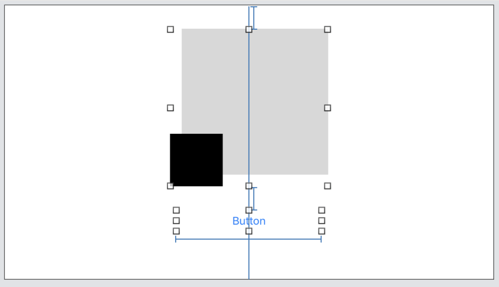
Here, you can see the image view’s alignment rectangle extends to the black square’s left, black square’s bottom, grey square’s top and grey square’s right edges. The image view is horizontally centered based on the black and grey squares’ combined width. The button’s top edge aligns below the black square’s bottom edge.
However, this may not be the layout you want. If you want the grey box edges as the alignment rectangle, you can update the view’s alignment rectangle for the layout engine to correctly align the view.
Before making any adjustments, look at the image view’s current alignment rectangle values:
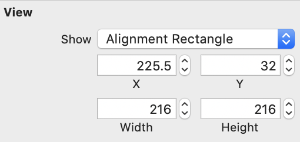
You can adjust a view’s alignment rectangle with the assistance of the asset catalog. To make the alignment rectangle adjustments in your project, here’s how you’d do it:
- Open the asset catalog.
- Click the image asset.
- Click the desired image(s). It’s possible to have different image versions for different scales.
- Click the Attributes inspector.
- In the Alignment section, enter the inset values for the selected image. The alignment section looks something like this:
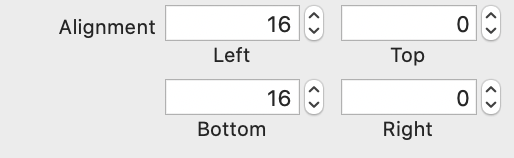
After the alignment adjustment, you’ll see the changes in the storyboard. Here’s the updated image view:
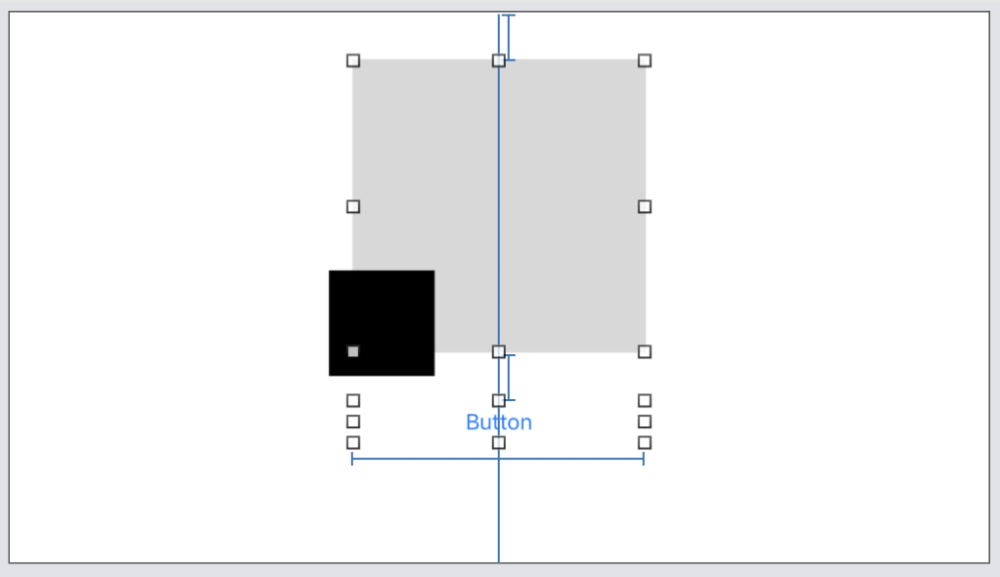
The image view’s alignment rectangle extends to the grey square edges; the image view is horizontally centered within the container using the grey square; and the button’s top edge aligns below the grey square’s bottom edge.
To achieve the same solution using code, you can create a custom image view:
import UIKit
final class CustomImageView: UIImageView {
override init(image: UIImage?) {
let edgeInsets = UIEdgeInsets(
top: 0,
left: 16,
bottom: 16,
right: 0)
let image = image?.withAlignmentRectInsets(edgeInsets)
super.init(image: image)
}
required init?(coder aDecoder: NSCoder) {
super.init(coder: aDecoder)
}
}
You can think of a view’s alignment rectangle as containing core visual elements, while a view’s frame contains the core visual elements plus ornaments.
Now that you know Auto Layout uses alignment rectangles to create a constraint relationship between views, another question you may have is: How does Auto Layout fit in the big picture of the different parts of the app?
Fitting Auto Layout in the big picture¶
In the process of view layouts, Auto Layout seems to “just” compute view layouts. Then, your user interface looks a certain way. This section covers the in-between view processes.
So, where is the layout engine is in the grand scheme of processes in an app? And, how does it interact with other user interface components to create your view layouts?
Look at the diagram below:
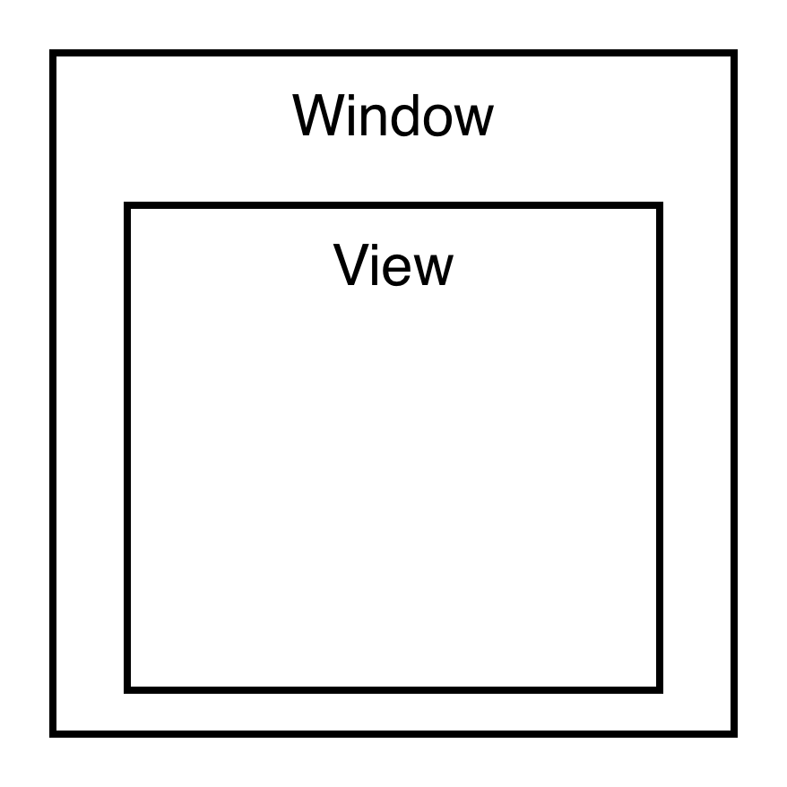
Your app contains a window, which contains a view. This view is your blank canvas.
Next, you add additional user interface components. You add constraints onto the initial view, and more components come into play:
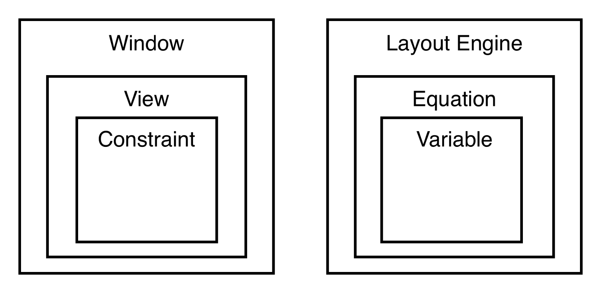
The initial view contains the constraints, and constraints convert into linear equations. The linear equations then pass into the Auto Layout engine for the layout calculations.
The layout engine calculates for layout variables. After solving the view’s layout variables (x, y, width and height), the layout engine manages the caching of view layout variables and the tracking of view dependencies.
Saving the view’s information is vital for Auto Layout’s performance. It allows Auto Layout to mitigate extraneous or repetitive layout calculations. For example, a view’s constraint constant can increment by a single point. Because of the cache, the layout engine doesn’t need to re-calculate the layout variables on the view. It also doesn’t need to re-calculate other views, which depend on the view’s alignment rectangle.
Repeatedly doing this type of layout re-calculation can take a toll on your app’s performance. Instead, the layout engine efficiently calculates the required parameters for the change in layout. After the layout engine calculates and saves the view’s layout information, it passes the view’s frame (size and position) back to the view. The view now has its essential layout information.
That’s how Auto Layout works in the grand scheme of processes in an app. Now, on a high-level, you understand the in-between processes from adding constraints to the views appearing on an app. Next, you’ll look at the low-level workings on how Auto Layout solves constraints.
Solving constraints¶
Auto Layout uses Cassowary, a constraint solving algorithm, to solve constraints. After placing constraints on a view, the view still needs to determine its layout variables. For this reason, you need a constraints solver. Cassowary helps translate a view’s constraints to layout variables.
With Auto Layout, you can create equality and inequality constraints, which represent either a linear equation or inequality, and add them to a view. The layout engine solves constraints for the layout variables.
Here’s an example linear equation:
- Item1.Attribute = Multiplier x Item2.Attribute + Constant
And, here’s a linear inequality:
- Item1.Attribute >= Multiplier x Item2.Attribute + Constant
Solving equality constraints¶
This section focuses on equality constraints and linear equations.
There are scenarios where you might have a constraint that positions a view a fixed number of points away from another view. Or maybe you have a constraint that indicates a view’s width is a multiplier of another view’s width. These are both examples of equality constraints. You’ll need to solve equality constraints to translate them into layout variables.
Look at these two labels with equality constraints:
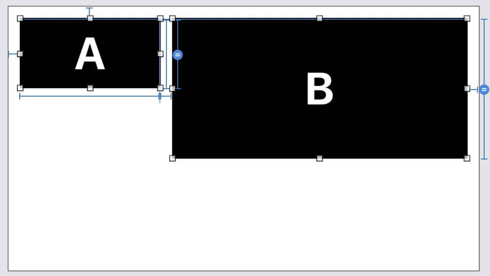
Label A has the following constraints:
- 200 points width.
- 100 points height.
- Top edge is 16 points from the superview’s top edge.
- Leading edge is 16 points from the superview’s leading edge.
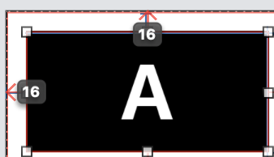
The linear equations associated with the constraints are:
- LabelA.width = 1.0 * NotAnAttribute + 200.0
- LabelA.height = 1.0 * NotAnAttribute + 100.0
- LabelA.top = 1.0 * Superview.top + 16.0
- LabelA.leading = 1.0 * Superview.leading + 16.0
Note that NotAnAttribute equals 0.
From solving the constraints added, the layout frame properties come out as:
labelA.frame.minX = 16
labelA.frame.minY = 16
labelA.frame.width = 200
labelA.frame.height = 100
The above pseudocode assumes Label A’s position is within its superview’s coordinate system, and the superview’s top and leading edges are zero in its own coordinate space.
Label A’s layout properties calculations are straight forward here. The view positions 16 points down and right from the superview’s top-left corner. Also, Label A has a constant width and height.
Now, the constraints added to Label B are more interesting:
- Top edge aligns with Label A’s top edge.
- Leading edge is 16 points from Label A’s trailing edge.
- Trailing edge is 16 points from the superview’s trailing edge.
- Height equals two times Label A’s height.
The linear equations are:
- LabelB.top = 1.0 * LabelA.top + 0.0
- LabelB.leading = 1.0 * LabelA.trailing + 16
- LabelB.trailing = 1.0 * Superview.trailing - 16.0
- LabelB.height = 2.0 * LabelA.height + 0.0
From solving the constraints added, the layout properties come out as follows:
labelB.frame.minY = labelA.frame.minY
= 16
labelB.frame.minX = labelA.frame.minX + labelA.frame.width + 16
= 16 + 200 + 16
= 232
labelB.frame.width = superview.frame.width - labelB.frame.minX
- 16
= 667 - 232 - 16
= 419
labelB.frame.height = labelA.frame.height * 2
= 100 * 2
= 200
The layout engine solves layout variables by making value substitutions. Did you know that you can solve constraints on paper? It’s true! Contrary to popular belief, the layout engine does not cast Harry Potter spells. Instead, it solves linear equations for equality constraints using math.
When it comes to solving inequality constraints, the constraint solving methods get a little more complex, and linear programming comes into play.
Solving linear programming problems¶
Linear programming problems ask questions relating to how to minimize or maximize a variable given constraints. Linear programming is a mathematical technique used in solving linear equations. Whether you’re looking to minimize cost or maximize output, linear programming can come in handy.
For instance, linear programming can assist a hardware company in maximizing product outputs or minimizing production costs given a set of constraints. The constraints, for example, can relate to a company’s budget, the number of available employees or certain hardware output per hour.
Note
This section walks through the process of solving a linear programming problem (LPP). You’re not expected to understand all of the intricacies involved with LPP, but you’ll have enough information here to gain a better understanding of Cassowary. The point is to get a feel for the high-level patterns of solving LPP — you’ll take a closer and more specific look at LPP when dealing directly with Cassowary.
Imagine yourself running a software company, and you’re trying to maximize the profit your company makes over the next month.
Here are your constraints:
- You have 100 software engineers.
- SWE work either at night or in the morning.
- The office’s capacity is 80 at night and 60 in the morning.
- SWE contributes $600 profit/hour at night and $400/hour in the morning.
- Each employee can contribute up to 100 hours/month.
- Employees can work up to 5 hours at night or 8 hours in the morning.
How many employees should work at night or in the morning to maximize profits for the next month?
Solving LPP on paper looks something like this:
//// Profit equation
P = 600x + 400y
//// Variables
x = # of SWE working at night.
y = # of SWE working in the morning.
//// Inequalities
// Employees can not work negative hours.
x >= 0, y >= 0
// The number of possible employees.
x + y <= 100
// The number of possible employees hours.
5x + 8y <= 10000
Here’s how the math works:
- You have your profit equation.
Prepresents the profit.xandyrepresent the software engineers working at night and in the morning, respectively. The coefficients represent profits for respective work environments (night/morning). - You have your set of constraints represented in inequalities. Employees can not work negative hours. The maximum number of employees given is 100. Total possible employee hours is 10,000 deriving from 100 maximum available employees and their available work hours per month.
In linear programming, optimal values are found at one of the vertices of the feasible region. The feasible region is the area that satisfies all the constraints.
To find the feasible region, you can graph the inequalities. Simply find the x and y-intercept of the inequalities by substituting zero for the other variable:
//// Substitutions
x + y <= 100
x = 100
y = 100
//// More substitutions
5x + 8y <= 10000
x = 2000
y = 1250
You now have your x and y-intercepts. When you graph the inequalities on paper, it looks something like this:
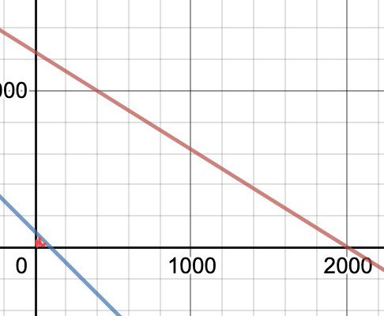
Below the red and blue lines, you’ll see a red shaded area. The red shaded area is the feasible region — an area that satisfies the four inequalities.
When you to zoom into the feasible region, you’ll see a clearer image of the feasible region vertices:
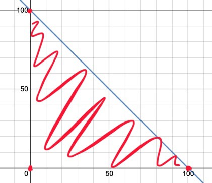
The three red points are the vertices of the feasible region and the corner points. The optimal point sits in one of the following coordinates:
- (0, 0)
- (0, 100)
- (100, 0)
You can now test each of these points to see the coordinate pair that gives you the highest profit given the inequality constraints. You can pull up the profit equation and test corner point coordinates:
P = 600x + 400y
// (0,0)
P = 600(0) + 400(0)
P = 0
// (0,100)
P = 600(0) + 400(100)
P = 40,000
// (100,0)
P = 600(100) + 400(0)
P = 60,000
From testing the corner point coordinates, it turns out that allocating 100 software engineers into working at night and 0 software engineers into working in the morning produce the highest profits for the next month.
OK, it’s time to twist the problem by replacing previous inequalities with the following inequalities:
//// Inequalities
x >= 0, y >= 0
x + y <= 100
5x + 8y <= 590
2x + y <= 100
What do you think, can you solve the given LPP?
With the inequalities above, the graph looks something like this with the feasible region:
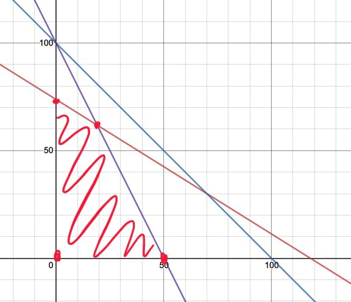
On the graph, you can see four vertices. The feasible region vertices at the x/y-intercepts are:
- (0, 0)
- (0, 73.75)
- (50, 0)
An extreme vertex in a feasible region like one of the above is known as a basic feasible solution. You can calculate the last vertex that makes up the feasible region. But first, you need to turn the inequalities into equations:
- Red line: 5x + 8y <= 590 -> 5x + 8y = 590
- Purple line: 2x + y <= 100 -> 2x + y = 100
After that, solve for the x and y coordinates using elimination and substitution:
//// Elimination
// 1
5x + 8y = 590
2x + y = 100 (multiply every value by -2.5 to cancel x)
// 2
5x + 8y = 590
-5x - 2.5y = -250 (add values together)
// 3
5.5y = 340 (divide both side by 5.5)
// 4
y = 61.81 (rounded to the nearest hundredth)
//// Substitution
// 5
5x + 8y = 590
5x + 8(61.82) = 590
x = (590 - 494.56) / 5
x = 19.09 (rounded to the nearest hundredth)
Here’s how the math works out:
- Multiply
2x + y = 100by-2.5. - Add
-5x - 2.5yand-250to5x + 8y = 590’s left and right hand side respectively. xis eliminated from5x + 8y = 590. You’re left with5.5y = 340. To solve fory, you divide both sides of the equation by5.5.- You get
61.81when rounded to the nearest hundredth fory. - Now, enter
yinto either equation to solve forx. Enteringyinto5x + 8y = 590gives youxas19.09when rounded to the nearest hundredth.
You now have all of the corner points of the feasible region. To test for the optimal point, pass the coordinates back into P = 600x + 400y:
- (0, 0) — 0
- (0, 73.75) — 29,500
- (50, 0) — 30,000
- (19.09, 61.81) — 36,178
For this particular problem, having a fraction of a person doesn’t make sense. But don’t worry; you can round down the numbers.
It turns out that 19 people working at night and 61 people working the morning is optimal given the constraints. The resulting profit for this allocation procedure is $35,800 / month.
Just like you did with that example, the layout engine is always trying to satisfy all of the constraints to the best of its ability — except the layout engine answers questions like “what’s the widest Label A can be while simultaneously satisfying all of Label A’s other constraints and Label B’s constraints?”
Now that you’re getting the hang of linear programming, it’s time to transition to Cassowary.
Cassowary¶
Cassowary optimizes layout computations for interactive user interface components. On June 29, 1998, Greg J. Badros and Alan Borning published an academic paper titled The Cassowary Linear Arithmetic Constraint Solving Algorithm: Interface and Implementation. According to the authors, constraint solvers at the time couldn’t efficiently handle simultaneous linear equations and inequalities for graphical applications. Hence, the birth of Cassowary.
Cassowary is an incremental algorithm and is based on the dual simplex method. In this section, you’ll solve inequalities using Cassowary. The subsections involved in solving inequalities are:
- Augmented simplex form.
- Basic feasible solve form.
- Basic feasible solution.
- Simplex optimization.
- Error minimization.
Sample inequality constraint problem¶
First, you’ll see a sample inequality constraint problem you need to solve. To prime an inequality constraint problem in augmented simplex form, you’ll represent the problem’s constraints in equations and inequalities. You’ll also learn what an objective function is to better understand its role in solving a linear programming problem.
Constraints¶
For time efficiency, you’ll solve inequalities in the horizontal axis. However, you can apply the same logic in the vertical axis context as well.
Below are three points (xl, xm, xr), which are all on the horizontal axis:
- - - - - xl - - xm - - xr - - - - -
With the following constraints:
xmis the midpoint ofxlandxr.xlis at least10points to the left ofxr.- The points are within the
0to100range.
Given the constraints, the solution is:
xl < xm < xr
You can simplify and remove redundant bound constraints, and represent the constraints shown above in equation and inequalities as follows:
- 2xm = xl + xr
- xl + 10 <= xr
- xr <= 100
- 0 <= xl
Problem/objective function¶
In linear programming, an objective function is a function that minimizes or maximizes for a specific goal. The objective function is the problem you want to solve in linear programming.
Your objective function is to minimize the distance between xm and xl given the constraints you saw earlier. You’ll begin to solve the objective function by converting the constraints into an augmented simplex form.
Augmented simplex form¶
The Cassowary algorithm builds on top of the simplex algorithm. The simplex algorithm is a method of solving optimization problems in linear programming and it doesn’t take negative values (un-restricted values).
All of the variables are >= 0 in the algorithm’s equations.
Augmented simplex form, on the other hand, allows and handles unrestricted variables. It can handle both positive and negative variables by using two tableaux — the unrestricted simplex tableau for unrestricted values and the simplex tableau for non-negative values. A tableau is a table of values representing a linear program in standard form. Tableau and standard form are interchangeable ways to represent a linear program.
The purpose of the augmented simplex form is to incrementally add and delete required constraints with restricted and unrestricted variables from the constraints system.
Converting inequalities to equations¶
The first step to working with augmented simplex form is to convert inequalities to equations.
Inequalities in the form of a linear real expression being less than or equal to a number, like this:
- e <= n
Can be converted to this:
- e + s = n, where s >= 0
The s is a non-negative number known as a slack variable.
Go ahead and convert inequalities in the form of a linear real expression to equations:
- xl + 10 <= xr -> xl + 10 + s1 = xr
- xr <= 100 -> xr + s2 = 100
You now have the following equalities and inequalities:
- 2xm = xl + xr
- xl + 10 + s1 = xr
- xr + s2 = 100
- 0 <= xl, s1, s2
Separating equations into tableaus¶
It’s time to separate the equalities into unrestricted and simplex tableaus. Initially, all of the equations are placed into the simplex tableau.
To separate the equalities into the unrestricted tableau, you’ll use Gauss-Jordan elimination. This includes the following steps:
- Find an equation with an unrestricted variable in the simplex tableau.
- Remove the equation from the simplex tableau.
- Solve for the unrestricted variable.
At this time, the unrestricted variable equals an expression. Using the expression you find, substitute the expression into both tableau’s equations.
Afterward, repeat removing unrestricted variables from the simplex tableau until there are no more unrestricted variables in the simplex tableau.
Application¶
Looking back at the equations above, you know that 0 <= xl, s1, s2. These variables have values that are confined to any number greater than or equal to 0. They’re restrictedvariables.
xr + s2 = 100 has an unrestricted variable, xr. Remove xr from the simplex tableau. Solve for the unrestricted variable:
- xr + s2 = 100 -> xr = 100 - s2
Substitute the expression into occurrences of xr in the simplex tableau:
- 2xm = xl + xr -> 2xm = xl + 100 - s2
- xl + 10 + s1 = xr -> xl + 10 + s1 = 100 - s2
- 0 <= xl, s1, s2
Look back into the simple tableau; 2xm = xl + 100 - s2 has an unrestricted variable, xm. After the substitution, you get:
- 2xm = xl + 100 - s2 -> xm = (1/2)(xl) + 50 - (1/2)(s2)
Substitute xm into the minimization problem; here’s how:
- minimize xm - xl
- minimize (1/2)(xl) + 50 - (1/2)(s2) - xl
- minimize 50 - (1/2)(xl) - (1/2)(s2)
The simplex tableau is left with the following equations:
- xl + 10 + s1 = 100 - s2
At this point, there are no more unrestricted variables in the simplex tableau.
Next, you’ll learn about basic feasible solve form to continue solving your objective function.
Basic feasible solve form¶
You started with inequalities and converted the inequalities to an augmented simplex form optimization problem. It’s now time to solve the problem.
You solve an augmented simplex form optimization problem by having the equations in basic feasible solved form, looking like this:
- x0 = c + a1x1 + … + anxn
With the following conditions:
- x0 is basic. It isn’t found in the objective function or any other equation.
- Other variables are parameters.
In a basic feasible solved form, you have a basic variable and parametric variables.
Your objective function is this:
- minimize 50 - (1/2)(xl) - (1/2)(s2)
Convert the equations into basic feasible solved form, and they’ll look like this:
- xm = (1/2)(xl) + 50 - (1/2)(s2)
- xr = 100 - s2
- s1 = 90 - xl - s2
Notice that xm, xr and s1 do not occur in the objective function or any other equation. Those are your basic variables. The other variables are the parametric variables.
With the equations set up in basic feasible solved form, you can solve for a basic feasible solution.
Basic feasible solution¶
As introduced earlier, a basic feasible solution is an extreme vertex of a feasible solution region. You look for these vertexes because you care about maximizing or minimizing outputs when solving linear programming problems.
To solve for a basic feasible solution, you:
- Set the parametric variables to 0.
- Have the basic variables equal to a constant.
Like this:
- xm = (1/2)(0) + 50 - (1/2)(0) -> xm = 50
- xr = 100 - (0) -> xr = 100
- s1 = 90 - (0) - (0) -> s1 = 90
Afterward, you have (xm, xr, s1, xl, s2) = (50, 100, 90, 0, 0).
Substitute the variable values into the objective function:
- 50 - (1/2)(0) - (1/2)(0) = 50
The value for the objective function using the basic feasible solution is 50. 50 is a viable solution, but it isn’t optimized — well, not yet!
Simplex optimization¶
The simplex algorithm finds the optimum solution by continually searching for an adjacent basic feasible solved form. The adjacent basic feasible solved form consists of a basic feasible solution. The basic feasible solution decreases the value in an objective function. When there’s no more adjacent basic feasible solved form left, the optimum solution is found.
Simplex optimization does the following:
- It takes a basic feasible solved form.
- It applies matrix operations known as pivoting.
- If further optimization is applicable, it creates a new basic feasible solved form and returns to Step 1.
When decreasing a variable value in the objective function, you can start with zero and go up from there. Ensure that as the variable increases, it doesn’t cause non-negative numbers to become negative.
Pivoting is an operation which exchanges a basic and a parameter using matrix operations. You pivot to search for an adjacent basic feasible solved form. You can reach an adjacent feasible solved form by performing a single pivot.
Application¶
First, look at how you can decrease the value in the objective function:
- 50 - (1/2)(xl) - (1/2)(s2)
Subject to the following non-negative confinements:
- 0 <= xl, s1, s2
Look at the objective function. As you increase xl starting at zero, the objective function value continues to decrease. You’ll want to increase this value until you can no longer do so.
Look at the simplex and unrestricted tableau.
From the simplex tableau, you have the following equation:
- s1 = 90 - xl - s2
Pivot by swapping out xl and s1:
- xl = 90 - s1 - s2
You’ve turned s1 into a parametric variable. xl is now basic. Now, substitute xlinto the other equations and objective function.
The unrestricted tableau:
- xm = (1/2)(90 - s1 - s2) + 50 - (1/2)(s2) -> xm = 95 - (1/2)(s1) - s2
- xr = 100 - s2
And, the objective function:
- 50 - (1/2)(90 - s1 - s2) - (1/2)(s2) -> 5 + (1/2)(s1)
At this point, you can decrease s1 to decrease the objective function value. However, s1 subjects to be greater than or equal to zero. s1 has already taken the value of zero, which is the minimum it can be.
There’s no further adjacent basic feasible solved form that can further decrease the objective function at this point. Hence, you’ve arrived at the optimal solution.
To get the objective function value, enter zero for the parametric variables in the objective function:
- 5 + (1/2)(0)
The objective function value is 5. Finally, you get the optimized solution.
That’s how Cassowary solves constraints involving inequalities. Cassowary also helps deal with non-required constraints.
Error minimization¶
For constraints with a non-required priority or priority < 1000, error minimization comes into play. With non-required constraints, the layout engine goes through additional optimizations before providing the final variables.
If you’d like to read more on the math behind handling constraint priorities, review Cassowary’s quasi-linear and quadratic optimization algorithms.
Key points¶
- Auto Layout uses alignment rectangles to create a relationship between two view items.
- Linear programming problems are minimization/maximization problems.
- Cassowary is a linear arithmetic constraint solving algorithm.
- The Layout engine uses Cassowary to solve equality and inequality constraints.
- Solving inequality constraints using Cassowary consists of working with augmented simplex form, basic feasible solve form, basic feasible solution and simplex optimization.